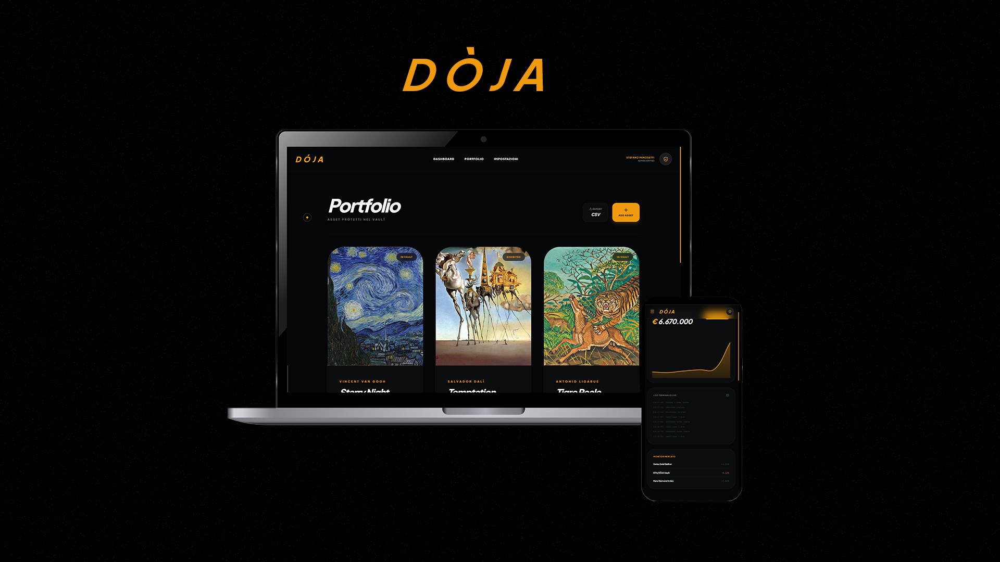
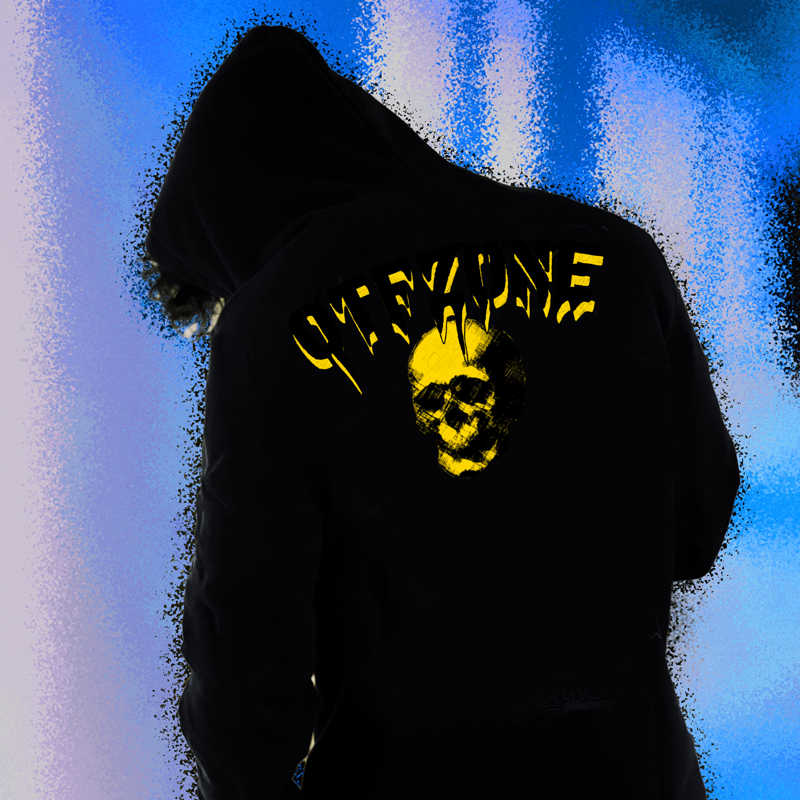
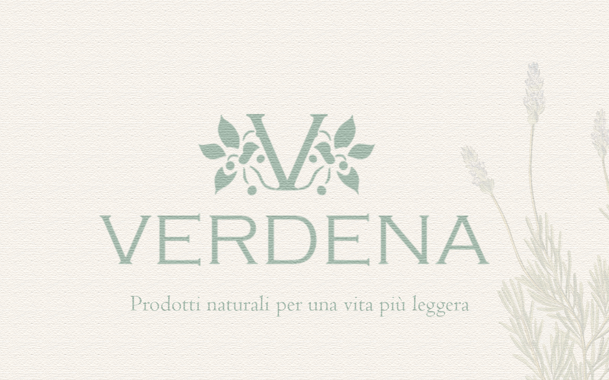

Junior Designer and Developer
Visual
DESIGNER
DEVELOPER
Il ponte che unisce tra l'informatica e la comunicazione visiva
CHI
SONO
e COSA FACCIO
Sono Stefano Panosetti, un Web Designer e Developer che opera nell'intersezione tra direzione artistica e sviluppo software scalabile.
laureato in Comunicazione con focus principale sul Visual Design e Web design. Ho svolto un corso di Web Design in cui ho approfondito HTML, CSS, Bootstrap e WordPress ed ho iniziato a costruire i primi siti. Ho sempre avuto una passione per l'informatica e attualmente sto frequentando un ITS in ambito ICT. Dati i miei studi, sono specializzato specialmente nel frontend, ma sto studiando anche il backend e i database per poter lavorare da full stack dev
COMPETENZE PRINCIPALI
- HTML/CSS
- WordPress
- JavaScript
- Brand Identity
- Adobe Suite
- UX/UX Figma
Esperienza Lavorativa
ITS Meccatronica Lanciano - ICT
In questo corso sto evolvendo il mio profilo verso il ruolo di Full Stack Developer. Sto studiando per padroneggiare l'intero flusso di sviluppo: dalla gestione dei Database e logiche Backend, fino alla creazione di interfacce Frontend complesse, per poter costruire applicazioni web complete e scalabili in totale autonomia.
Graphic/Web Design
Svolgo lavori grafici da freelance per diversi clienti. Nel corso di questi anni mi sono occupato di Personal Branding, Visual Design, cura di identità Artistiche e Graphic Design. Ho fatto anche lavori di Web Design e sviluppato siti sia con wordpress che senza.
In questi anni di freelancing ho sperimentato molto toccando vari capi della comunicazione visiva. Qui sotto trovi alcuni dei miei lavori, alcuni sono per clienti reali altri semplici casi studio :)
Progetti Selezionati

DOJA
Portafoglio viruale con gestione e logiche acquisto di quadri e opere d'arte
VIEW CASE STUDYOtfzone
Portfolio spaziale navigabile. Un'esperienza web che simula l'esplorazione fisica di un edificio.
VIEW CASE STUDY
.png)
Dogtype
Sistema di controllo remoto per bracci meccanici industriali con feedback aptico visivo.
VIEW CASE STUDYVerdena
Esperienza di shopping immersivo per un brand di streetwear di lusso. Transizioni fluide e caricamento istantaneo.
VIEW CASE STUDY